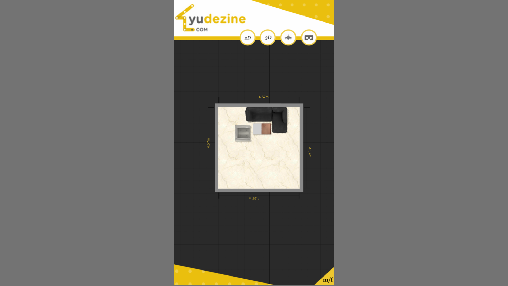
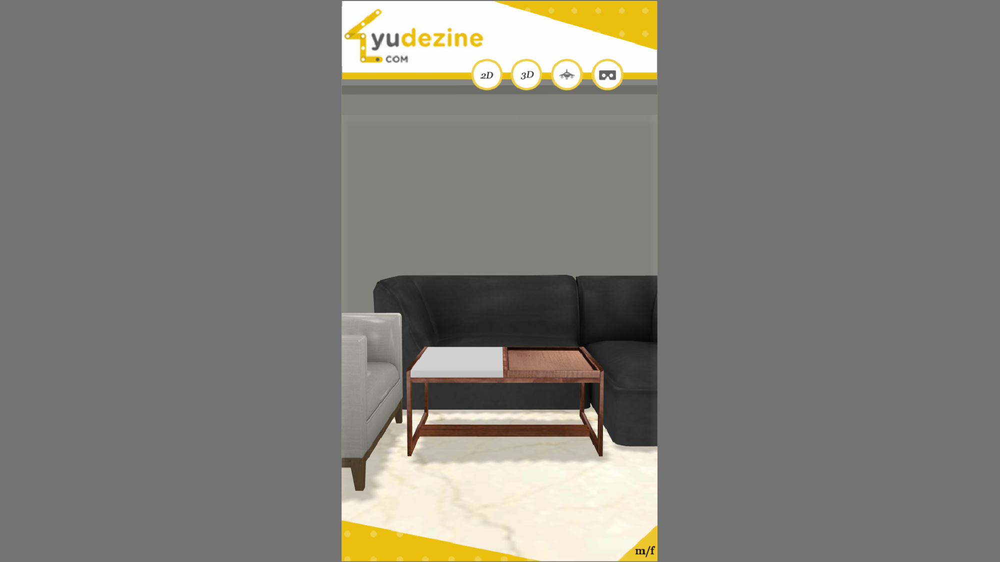
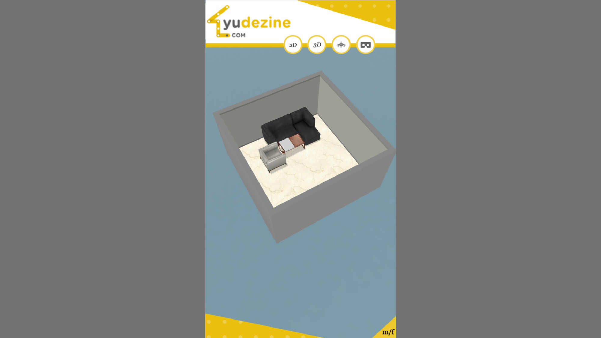
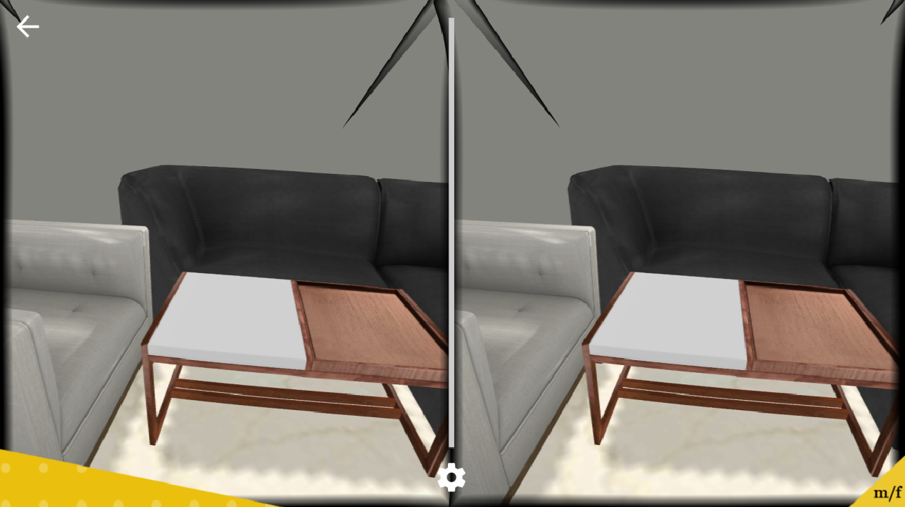
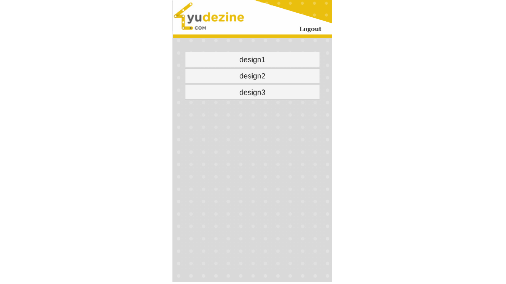

Technical Leadership
Led the Unity development effort and coordinated implementation across Unity developers and 3D artists to maintain momentum across the product.
A connected 3D home design platform that combined browser-based interior creation with a companion mobile and VR experience, allowing users to design, visualize and explore their spaces across multiple perspectives.
YUCAD combined two connected experiences into a single product ecosystem. YUCAD Design Studio provided an interactive browser-based environment for planning and customizing home interiors, while the YUCAD VR App extended those designs to mobile devices through 2D, 3D, top-down and immersive viewing modes.
The goal was to make interior design more accessible and visual—enabling users to experiment with layouts, furniture and finishes, then experience the resulting space from different viewpoints before making decisions.
Led the Unity development effort and coordinated implementation across Unity developers and 3D artists to maintain momentum across the product.
Developed the core interaction workflows required for creating, modifying and visualizing interior layouts in real time.
Worked on the Unity WebGL experience and its connection with the surrounding web and e-commerce ecosystem.
Contributed to the companion application that allowed saved designs to be explored through multiple viewing modes, including immersive VR.
Users could work directly with interior layouts and visual elements, creating and adjusting a room through an interactive 3D workflow.
The same design could be understood from floor-plan and three-dimensional perspectives, helping users move between planning and visualization.
Furniture, materials and spatial arrangements were presented interactively, allowing design decisions to be evaluated immediately.
Saved YUCAD designs could be accessed through a companion mobile experience designed for convenient viewing and exploration.
The VR mode allowed users to move beyond a conventional screen-based preview and experience the scale and arrangement of the designed environment more directly.
The project was built around a connected Unity workflow spanning browser, Android and iOS platforms.






YUCAD brought together design creation and immersive visualization in a connected product experience—allowing users to move from planning an interior in a browser to viewing the same space in 2D, 3D and VR across mobile platforms.